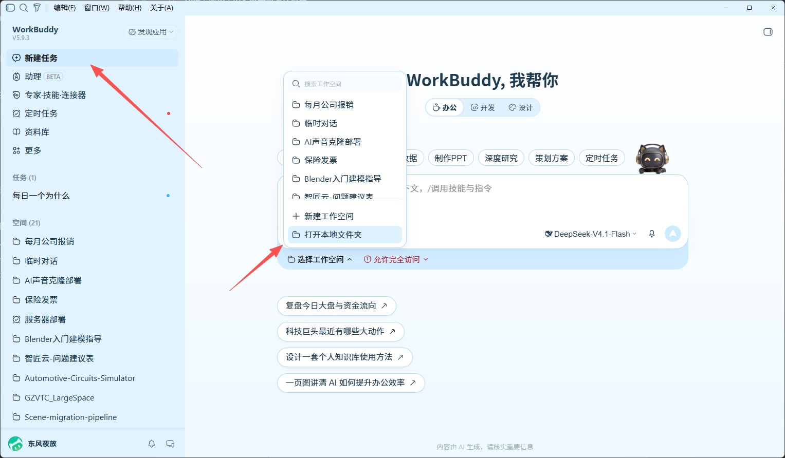

01
先把压缩包解压
选择一个固定、可写且以后容易找到的本地目录。解压后会出现名为“运行研究版”或“完整研究版”的文件夹；这个文件夹就是 WorkBuddy 要添加的项目根目录。
运行研究版/ ├─ README.md ├─ 使用指南.html ├─ 开发者阅读说明书.md ├─ 启动丧尸群体测试.cmd ├─ src/ ├─ runtime/ └─ scripts/
不要在压缩软件的预览窗口里直接运行项目。先完整解压，再添加解压后的文件夹。
这是开发项目。把压缩包解压到一个固定、可写的位置，然后在 WorkBuddy 中新建任务，通过“选择工作空间”添加解压后的项目文件夹。
首次接入 / 约 1 分钟
选择一个固定、可写且以后容易找到的本地目录。解压后会出现名为“运行研究版”或“完整研究版”的文件夹；这个文件夹就是 WorkBuddy 要添加的项目根目录。
运行研究版/ ├─ README.md ├─ 使用指南.html ├─ 开发者阅读说明书.md ├─ 启动丧尸群体测试.cmd ├─ src/ ├─ runtime/ └─ scripts/
打开 WorkBuddy，在左侧选择“新建任务”。这样后续对话会以这个开发项目作为工作空间。

点击查看原图在输入框下方点击“选择工作空间”，再选择“打开本地文件夹”。在系统目录选择器中找到解压后的项目根目录，选中后添加。
完成标志
项目文件已经作为工作空间载入。此时可以继续阅读说明，或双击“启动丧尸群体测试.cmd”运行模拟。